This page documents the procedure for reducing data taken with LBW and the WAPPS correlator. If you are instead working with data taken using the interim correlator, see the IC version of these instructions here.
If you are using MacOS and have problems with the mouse clicks, see if David's suggested fix works for you.If you are uncertain which correlator produced your data, note that:
Here is a short command summary for experienced LBW data reducers. If you are not one, be sure to read through the rest of the document first!!
;***** Reduce an individual source: ***** idl @wasinit @lbwinit wappfile='/share/pserverf.sda3/wappdata/wapp.2015MMDD.a2941.****.fits' ;or, if the files were just observed: wappfile='/share/wappdata.now/wapp.2015MMDD.a2982.****.fits' board = 1 lbwfromwapps,wappfile,board, lbwsrc lbwbaseline, lbwsrc lbwmeasure,lbwsrc [Only if you have a non-gaussian detection!!!!] ;or lbwmeasure,lbwsrc,/gaussian [Only if you have a gaussian detection!!!!] lbwtoascii, lbwsrc, filename=lbwsrc.LBWsrcname + '_b'+strn(board)+'.txt' save, lbwsrc, filename=lbwsrc.LBWsrcname + '_b'+strn(board)+'.sav' ;repeat for board=2, board=3, board=4 ; ***** Creating a Catalog: ***** @lbwcatinit lbwcatalog or lbwcsvcatalog lbwcatalog, /dist or lbwcsvcatalog, /dist *note: We have several lbw followup proposals, so the wappfile name might be a2899.****.fits, or a2941, or a2982 etc.
Below is a detailed explanation of the steps involved in reducing LBW data. Like ALFALFA data reduction, these steps aren't hard, but things can go wrong if they aren't done with care. If you have questions, please ASK. The outline of what we are going to do:
These instructions detail the steps involved in the reduction of a single source.
If you haven't reduced LBW data before, make sure that idl can find the lbw reduction routines. You only need to do this once.
!path = expand_path('+/home/dorado3/galaxy/idl_lbw')+':'+ !path
This will add the idl_lbw directory to your IDL path on startup. Note that this is not necessary if you are working at Arecibo or as "galaxy" at Cornell.
1.Setup
To get started, open an idl session (type idl in a terminal).
>idlNote that if you are working on data at Arecibo, be sure to do your work in the correct directory, e.g.:
IDL> cd,'/share/a2010-2/work/mar2013/teamA'Compile the software that we will need to reduce the data:
IDL> @wasinit IDL> @lbwinit
Note that if you have previously compiled @corinit, you should run a .reset, and run @wasinit, since things can get confused if you don't.
Now you have all the programs you should need at your disposal.
As you start each new source, take a quick look at each of the four spectra ("quadrants") produced by our search mode using the quicklook command as described in the section on Check the spectrum produced by each ON-OFF pair" in the ALFALFA followup observers' checklist. Be sure that you know how to run (and interpret) "lbwquicklook" with its various options, e.g.IDL> lbwquicklook, file='/share/wappdata.now/wapp.20161011.a3064.0001.fits',smo=5 IDL> lbwquicklook, file='/share/wappdata.now/wapp.20161011.a3064.0001.fits',smo=5,/vel,board=3,xrange=[900,11000] IDL> lbwquicklook, file='/share/wappdata.now/wapp.20161011.a3064.0001.fits',smo=5,/vel,board=3,/gps
2. Load source data: lbwfromwapps
The data from each observed source is saved in a "wappfile," which is the output from the WAPPS (the backend that we use for LBW observations). These files are in a format not fit for human consumption, so the first thing is to transform it into something intelligible. Additionally, the WAPPS data in search mode uses all 4 boards, but the lbw code can only handle 1 board at a time, so we also need to select which board to work on (1,2,3, or 4). To do this, we use lbwfromwapps, which takes as an input the name of the wappfile and the board number, and outputs an understandable idl structure that contains all the information about the observation.
IDL> wappfile='/share/pserverf.sda3/wappdata/wapp.2015MMDD.a2941.****.fits' IDL> board = 1 IDL> lbwfromwapps,wappfile,board,lbwsrc*Note that if you are doing the data reductions the night of the observations, the files will be in the /share/wappdata.now/ directory instead:
IDL> wappfile='/share/wappdata.now/wapp.2015MMDD.a2982.****.fits'Also, if you are dealing with a board (usually only board "3", but under some circumstances if might be elsewhere) which has evidence of a GPS burst in either the ON or the OFF, you can turn on the keywork /gps to remove it (just as you did with quicklook), i.e., invoking the "/gps" option in lbwfromwapps will excise the GPS from the spectrum:
IDL> lbwfromwapps,wappfile,board,lbwsrc,/gps
The lbwsrc structure contains 32 tags. It includes the source name (e.g. 'H084515.8+250538'), the original WAPPFILE name, and then information about the source, like the ra and dec. You can see these by typing (for example):
IDL> print,lbwsrc.ra
131.32250
It also includes tags that we will edit below, like the baseline, the rms, and the velocity width (w50). For a full listing of the contents of the structure type:
IDL> help, lbwsrc,/st
3. Fit a source baseline: lbwbaseline
In order to make a proper measurement, we first need to fit a baseline to the data. To do this, we use lbwbaseline.
IDL> lbwbaseline, lbwsrcWhen you type this command, an image of your spectrum will pop up that looks something like this:
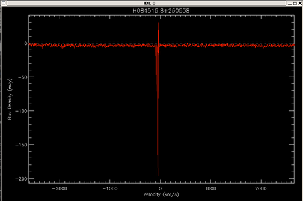
Note the dashed white line at a flux of 0 mJy. Any points where the flux density is negative means that the off observation had a greater flux than the on observation.
The image is autoscaled to your lowest and highest peak, so you will likely need to rescale it to something more reasonable. The code will ask you to give a scale for the vertical axis of the plot:
IDL> lbwbaseline, lbwsrc Find a good range for plot: Give [min, max] range to vertically rescale plot. Press [enter] to accept ranges. :If you like the plotted y-range, you can just hit enter. Else, type the the min and max that you would like to see (in mJy). The code is smart and accepts several input formats, but the simplest is just to type two numbers:
: -10 10then hit enter. If you don't like the range you chose, choose a different range and hit enter. Hit enter again to accept the range you chose. If you choose a bad range so that you can't accurately complete the steps below, kill lbwbaseline (ctrl+C) and start again.
The next step in lbwbaseline is to choose the area of your spectrum to include in the baseline fit. The code now instructs you to:
Mark the region(s) without the source or RFI. Baseline fitting will be performed in these regions. Left-click to add region boundary Right-click to finish adding regions.
Mark the regions you want by left clicking on the right and left sides of the bit of the spectrum you want to include in the fit. You want to include any bit of the spectrum that is just noise (don't include any sources, RFI, or galactic hydrogen). Be sure to include a wide enough range of channels that the program can get a good fit, but not too wide so that you include the areas of low sensitivity at the edges. (Recall that the LBW bandpass looks like this):
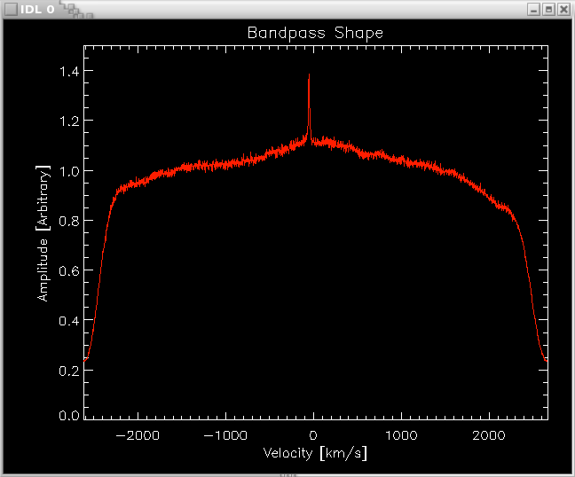
Usually you will want multiple bits of spectrum, so mark as many regions as you need. Note that you can click in any order. If you mess up, make sure you have an even number of boundaries marked, then simply reject your fit (see below) and try again.
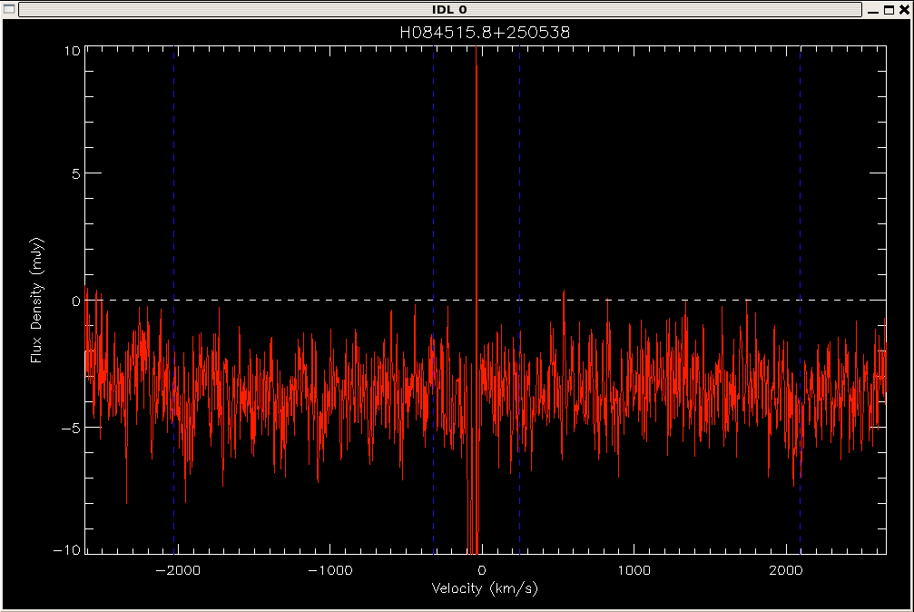
When you have selected your boundaries, right click to move on. The areas that will be used to calculate the baseline fit should turn blue, and your terminal will display the following:
Colored regions are masked. There should be no emission or RFI in the masked regions. Left-Click to try again Right-Click to accept masks
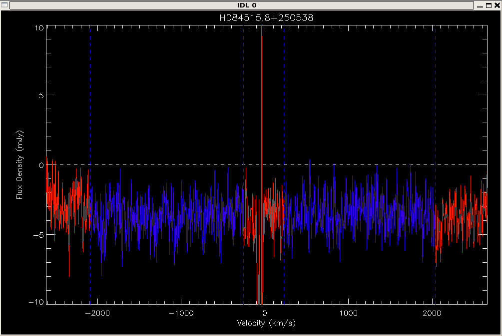
If you like your boundaries, right click. If you'd like to try again, left click.
After you've selected masked regions (the regions used to fit the baseline), lbwbaseline calculates a polynomial fit to the regions you've chosen, interpolating over any areas not included in the fit. It fits polynomials of 0th order through 9th order, calculates an RMS for each fit, and then recommends and plots a fit. The screen output will look something like this:
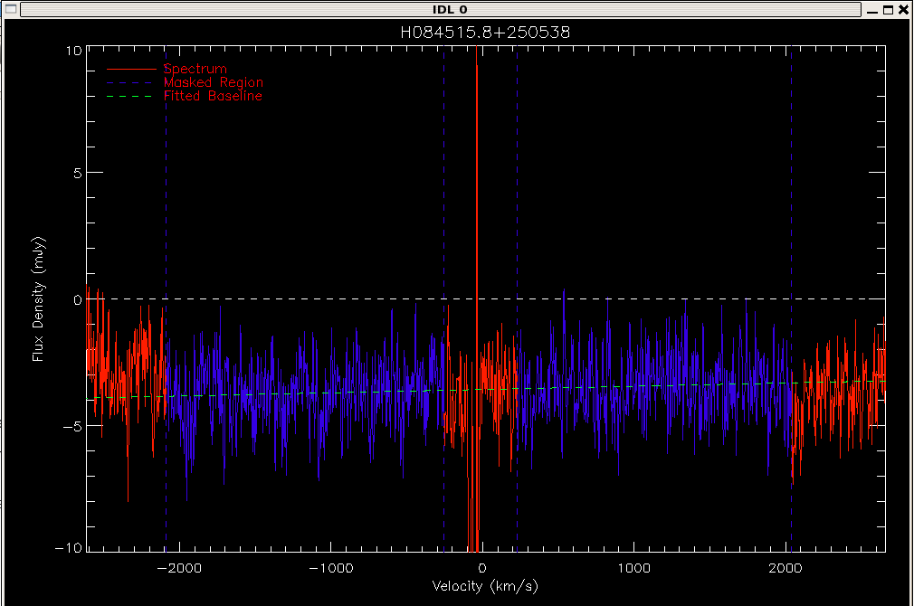
Statistics for each fit order: order rms(mJy) 0th 1.3068 1st 1.3015 2nd 1.2916 3rd 1.2867 4th 1.2845 * 5th 1.2845 6th 1.2833 7th 1.2736 8th 1.2736 9th 1.2718 Plotting a fit of the recommended order (4th). Enter an order [0-9] to plot and select. Press [enter] to accept. :If you like the recommended fit, hit enter. Else, enter a different order [0-9]. Go for the lowest order you can that still gives a reasonable fit. The recommended fit order is usually reasonable, but is not always the best choice. The program will display the new fit. If you like it hit enter. Else try again.
The output to the screen will look something like this:
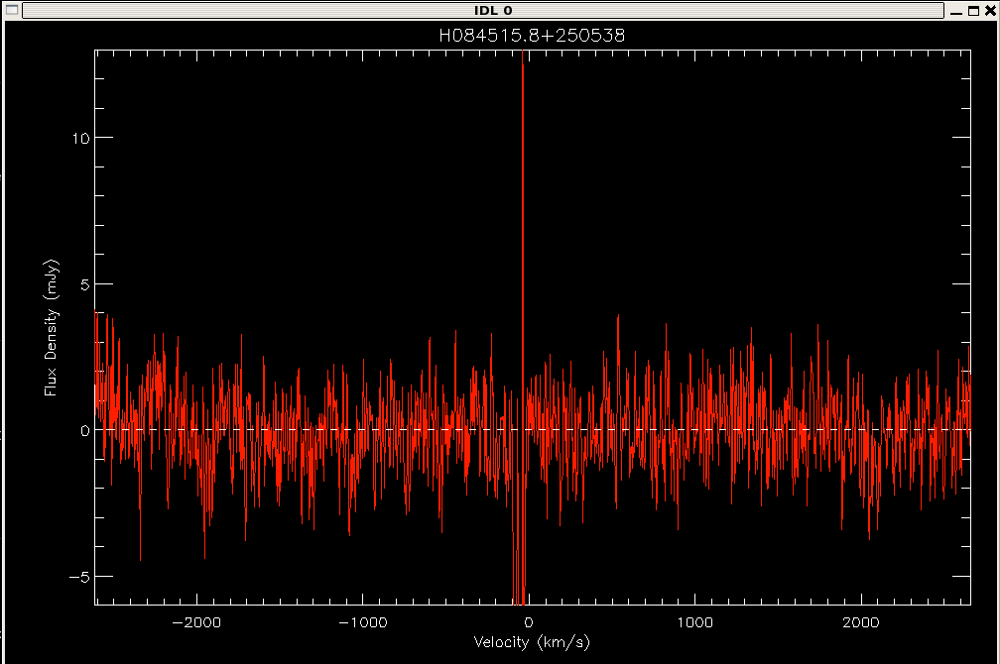
RMS of Hanning smoothed spectrum: 1.2742205 Plotting baseline-subtracted spectrum...
The code will now ask you to enter comments.
Please enter any comments on baseline fitting and subtraction: :Type your comments, if any, and hit enter. If the source isn't detected, say so. If the baseline is severely affected by RFI, has major or rapid variations, or displays anything else unusual, say so. Example useful comments:
: No detection, but strong RFI emission at 1300km/s. Waves in the baseline due to that rfi, use fit with caution. : Strong continuum source in off - 250mJy : Continuum source in on - 50 mJyThe program should now finish. Don't worry if you get an arithmetic error.
% Program caused arithmetic error: Floating underflowYou've now successfully baseline subtracted an LBW spectrum.
4. Fit the Spectral Line: lbwmeasure
ONLY DO THIS STEP IF YOU HAVE A DETECTION. If no detection you may skip ahead to step 5, Recording the Information.
If you have a detection, you now need to measure that detection, i.e., the flux, velocity, and velocity width of your spectral line. To do this we use lbwmeasure.
First decide if your line is better fit by a gaussian (one peak) or a 2-horned profile (double peak). If your source is especially noisy or low signal to noise, the trapezoid (douple peak) fit may work best. If it is a gaussian, type:
IDL> lbwmeasure,lbwsrc,/gaussianIf you are using a trapezoidal fit, type:
IDL> lbwmeasure,lbwsrc,/trapElse type:
IDL> lbwmeasure,lbwsrc
The first thing the code will do is ask you to zoom in on the source itself.
Find a good zoom level to view the source.
Left-button drag to move the box.
Right-click to accept.
Middle-button drag to resize box.
(For mice without middle button, click right+left simultaneously)
395.65827 74.003253 263.42987 532.00001
It will pop up a window that looks like this:
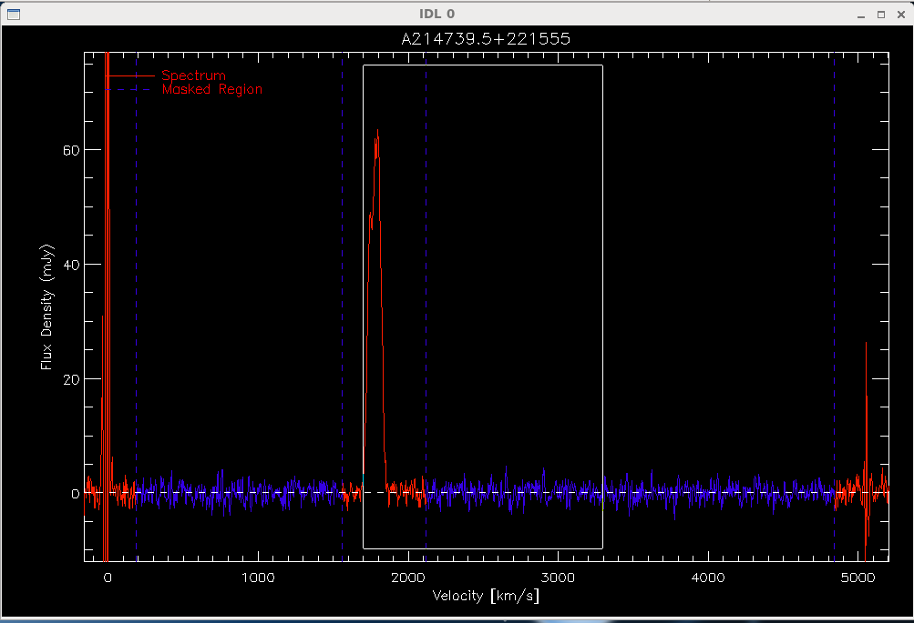
Center the white box on your source by left clicking on the box and moving it around. You can resize the box by holding down the middle mouse button and dragging at any of the corners (or holding left and right mouse buttons together if the mouse doesn't have a middle button). It takes a little getting used to, but that's the way the codes has to be since we are using idl. Try to make your box centered on the source, and big enough that it includes the entire source plus some baseline, but small enough that you will be able to see the details of the fit. When you like your box, right click, and then left click to confirm.
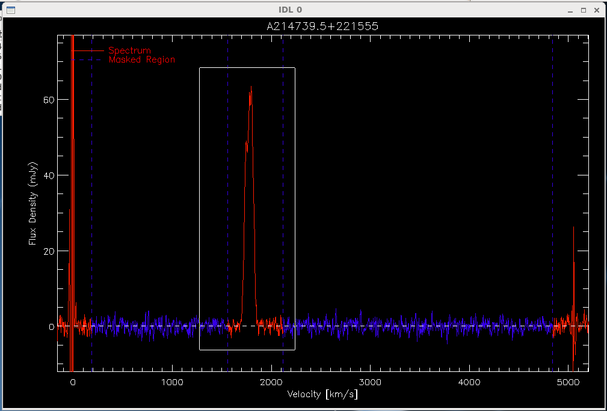
Use this zoom level? Left-click to accept. Right-click to choose again.
The next step depends on what kind of fit you are using.
If you are doing a gaussian fit, you need to select a region around the spectral line, that is, click once on each side of the line. The code will attempt a gaussian fit to the profile, which will appear in dark blue or yellow.
Click ONCE on EACH SIDE of the emission line. Left-click to select region boundaries. Right-click to start over. Is this fit OK? Left-click to approve Right-click to try again
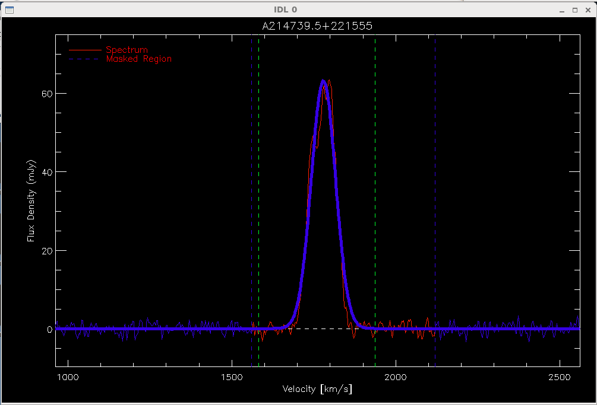
After you ok the fit to the right side of the spectral line, the code will print its calculated parameters to the screen, and update them in the structure lbwsrc.
You now can proceed to step 5, recording the information you've just measured.
If you are doing a two-horned fit (that is, if you are doing a fit to a double horned profile, you now need to tell the code where the edges of the source are. The code prints:
Select a region around the left edge of emission. Left-click to select region boundaries. Right-click to start over.Click to the left and to the right of the LEFT EDGE of the spectral line. After two clicks the code will attempt to fit a line to the left edge of the profile, which will appear in yellow:
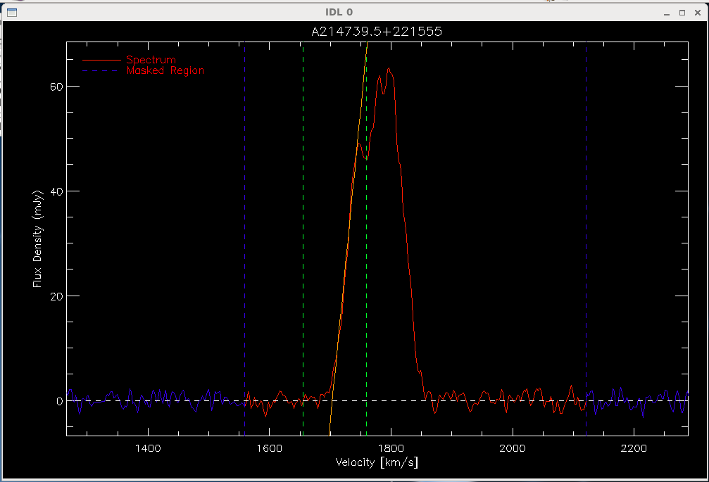
If the fit looks fine to you, then right click, and repeat the same procedure for the right edge of the spectral line.
Is this fit OK? Left-click to try again Right-click to approve Select a region around the right edge of emission. Left-click to select region boundaries. Right-click to start over. Is this fit OK? Left-click to try again Right-click to approve
After you ok the fit to the right side of the spectral line, the code will print its calculated parameters to the screen, and update them in the structure lbwsrc. It also will display the final fit, which should look something like this:
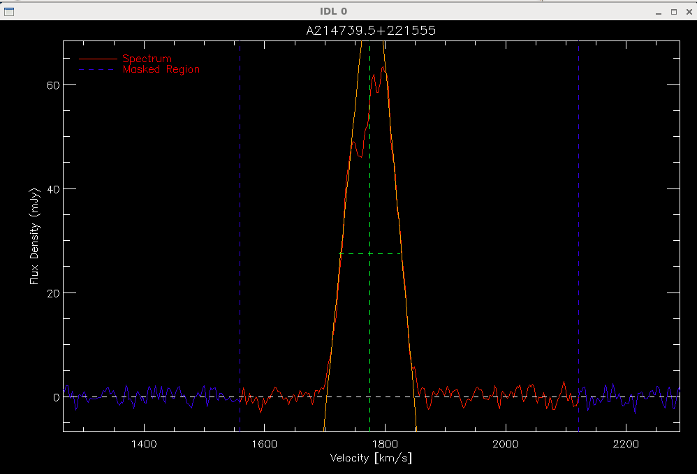
The code will now again ask you to enter comments.
Please enter any comments: :Type your comments, if any, and hit enter. If you don't trust your fit, say so, and why. If the fit parameters don't seem quite right, make a note. If you had to do something special to make the fit work, explain. Example useful comments:
: blended profile, large noise levels on low velocity horn : source confused with galactic hydrogen : low signal to noise detection : weird asymmetric profile : large systematic error: fit chooses wider of 2 possible profilesThe program should now finish.
You now can proceed to step 5, recording the information you've just measured.
If you are doing a trapezoid fit (that is, if you are doing a fit to a double horned profile, but the signal to noise is low or the source is unusually noisy) you need to tell the code where the edges of the source are.
The trapezoid fit does not use the spectrum itself to determine where the “edges” of the spectrum are, but where you click. The most important part of using the trapezoid fit is to pick places on the spectrum that you think are good representatives of the left and right edges of the spectrum, not necessarily the peak and zero crossing.
The code prints:
Click on the left and right sides of the spectrum, in any orderLeft-click along the left side twice, and along the right side twice. The points you select will be used to define a line which determines where the edge of the spectrum is.
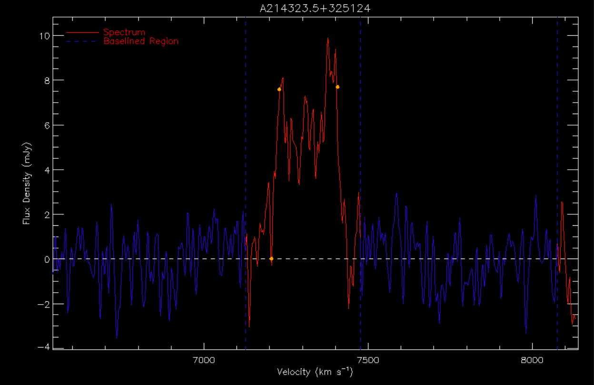
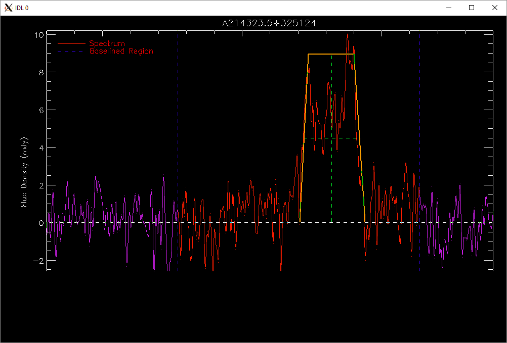
Please enter any comments: :
Now that we've edited the idl structure to include a baseline fit, and, if we have a detection, line parameters, we want to save what we've done. First we want to write out the information about the LBW source to a text file. To do this type:
IDL> lbwtoascii, lbwsrc, filename=lbwsrc.LBWsrcname + '_b'+strn(board)+'.txt'If you would prefer a different filename or a different directory, you can change the filename parameter:
IDL> lbwtoascii, lbwsrc, filename='/home/myfavoritedirectory/examplefilename.txt'
We also want to save a .sav file that we can easily read back into idl later. To do this type:
IDL> save, lbwsrc, filename=lbwsrc.LBWsrcname + '_b'+strn(board)+'.sav'Note that here we give it a filename based on the lbw source name because save is a generic IDL function. If you would prefer your own name to our default name, just change the file name:
IDL> save, lbwsrc, filename='/home/myfavoritedirectory/examplefilename.sav'
That's it, you've sucessfully reduced an L-band Wide Spectrum!
Now, go back and repeat steps 2-5 for each other board, setting board=2, board=3, and board=4.
6. (Optional) Boxcar smoothing the spectrum: lbwsmooth
There will be occasions where you may need to smooth your spectrum to reduce the noise in the spectrum. To do this we use lbwsmooth, which has syntax:
IDL> lbwsmooth, lbwsrc, smoothtypeThe smooth type should be a string, either 'h' for 3 channel Hanning smoothing, or 'bX' for X channel boxcar smoothing. Box car smoothing first Hanning smoothes the data, then applies the boxcar smoothing (this is to be consistent with Springob 2005 (e.g. Table 2)). So, if you would like to apply a boxcar smoothing of width 5, you would type:
IDL> lbwsmooth, lbwsrc, 'b5'The smoothing procedure updates the spectrum and rms in lbwsrc, so after smoothing you can rerun lbwmeasure, etcetera.
7. (Optional) Outputting plots: lbwplot
If you want to make a plot of what you've done scaled to your specifications, use lbwplot:
IDL> lbwplot, lbwsrc, xrange=xrange, yrange=yrangeThe xrange and yrange are both optional parameters. Scale them to your specifications, e.g.:
IDL> lbwplot, lbwsrc, xrange=[-1000,1000], yrange=[-10,10]Syntax does matter here - be sure to input the x and y ranges as arrays.
If you would like to save the plot that you've made as a png file, you can use the following command:
IDL> lbwtopng, lbwsrc, xrange=[-1000,1000],yrange=[-10,10]
If you would like to replot in another IDL session, use the following commands:
IDL> wappfile='/share/pserverf.sda3/wappdata/wapp.2015MMDD.a2941.****.fits' IDL> board = 1 IDL> lbwfromwapps,wappfile,board,lbwsrc IDL> restore,'the_sav_file_you_created_for_the_source' IDL> lbwplot,lbwsrc
8. (Optional) Viewing or Updating comments: lbwcomments
If you would like to view comments on an individual source, you can use lbwcomments. If you would like to view the existing comments on a source, type:
IDL> lbwcomments, lbwsrc, /viewIf you would like to add an additional comment
IDL> lbwcomments,lbwsrc,'this is a comment',/addIf you would like to edit an existing comment, give the text of the comment, the line of the comment you would like to edit (as an int), and set the /edit keyword:
IDL> lbwcomments,lbwsrc,'newcomment',commentline,/edit
Below is full example of how this feature works:
IDL> lbwcomments,lbwsrc,/view 0 these should be good comments/not bad ones 1 not a very good two horned fit IDL> lbwcomments,lbwsrc,'this is a comment',/add IDL> lbwcomments,lbwsrc,/view 0 these should be good comments/not bad ones 1 not a very good two horned fit 2 this is a comment IDL> lbwcomments,lbwsrc,'this is a better comment',2,/edit IDL> lbwcomments,lbwsrc,/view 0 these should be good comments/not bad ones 1 not a very good two horned fit 2 this is a better comment9. (Optional) Combining multiple observations of a single source: lbwcoadd
You may have multiple observations of the same source from different nights of observing. It is possible to combine these observations into a single spectrum using lbwcoadd.
First, you will have to create a structure for each of your observations. Be sure to name each structure something different (don't name them all lbwsrc). Also make sure to correct for gps or to smooth if necessary:
IDL> wappfile='/share/wappdata.now/wapp.2016MMDD.a3064.0008.fits' IDL> board = 1 IDL> lbwfromwapps,wappfile,board,struct1 IDL> IDL> wappfile='/share/wappdata.now/wapp.2016MMDD.a3064.****.fits' IDL> board = 1 IDL> lbwfromwapps,wappfile,board,struct2 IDL> IDL> wappfile='/share/wappdata.now/wapp.2016MMDD.a3064.****.fits' IDL> board = 1 IDL> lbwfromwapps,wappfile,board,struct3Next, you will need to fit a baseline to each source:
IDL> lbwbaseline, struct1 IDL> lbwbaseline, struct2 IDL> lbwbaseline, struct3Then, you will have to put these structures together in an array:
IDL> input=[struct1,struct2,struct3]Finally, you are ready to run lbwcoadd. Type:
IDL> lbwcoadd, input, lbwsrcThe program will average together the spectra from your input sources and plot the combined spectrum. Data for the combined spectrum will be stored in a structure called lbwsrc.
Just like lbwbaseline and lbwmeasure, lbwcoadd will prompt you for comments:
Please enter any comments on spectrum combination: :You may type any comment you wish; if you do not wish to comment, press enter.
You have now succesfully combined multiple observations into a single spectrum! The combined spectrum can now be measured using lbwmeasure (see Step 4).
10. (Optional) Recalling the plot of a previously reduced source: lbwrecallplotYou may wish to go back and look at the spectrum of a source after you have reduced it and saved it. You can do this using lbwrecallplot. This program works much the same as lbwplot, but it has a few different keywords.
Calling lbwrecallplot with no keywords plots your baselined source in velocity space:
IDL> lbwrecallplot,'the_sav_file_you_created_for_the_source'
The keywords below are not currently working - stay tuned .... try to load the file into lbwsrc instead... but I think this is a bug.
The freq keyword will plot your spectrum in frequency space. The raw keyword signifies that you wish to view the raw,
unbaselined spectrum of your source. The freq and raw keywords can be used in conjunction to produce the raw spectrum
in frequency space. The mask keyword plots the spectrum and reproduces the masks that the user selected
during the lbwbaseline process. The measure keyword plots the spectrum and reproduces the fit (either two-horn or gaussian)
that the user generated during the lbwmeasure process.
IDL> lbwrecallplot, /freq IDL> lbwrecallplot, /raw IDL> lbwrecallplot, /freq, /raw IDL> lbwrecallplot, /mask IDL> lbwrecallplot, /measure
This section describes the steps you may take once you have reduced a whole set of LBW sources using the instructions from Part I.
Before you can begin any of the steps in this section, you will have to compile a few more programs. Type:
IDL> @lbwcatinitThen press enter. You may now move on to the following steps.
Once you have reduced all of your LBW sources, you can create a catalog of the data from these sources using lbwcatalog. This program will create an ASCII catalog file of your LBW reduction data.
Before you run lbwcatalog, make sure that your current directory contains all the .sav files of the LBW sources you want to include in your catalog. Also make sure that your current directory doesn't contain any .sav files that you don't want in your catalog file; lbwcatalog will grab every .sav file it sees in the current directory and try to add it to the catalog.
Once your directory contains the correct files, simply type:
IDL> lbwcatalogThe program will print out the name of each source as it adds it to the catalog file. Once lbwcatalog is finished, a .txt catalog file will appear in your current directory. lbwcatalog sets the default name of the catalog as 'catalog.txt'. If you want to specify a different file name, you can type:
IDL> lbwcatalog, filename='yourfilenamehere.txt'12. Creating a CSV catalog of sources: lbwcsvcatalog
You can also create a catalog of your LBW sources using lbwcsvcatalog. This program will create a CSV catalog file containing the data from your LBW sources.
lbwcsvcatalog runs much like lbwcatalog. Again, make sure that your current directory contains all the .sav files that you want to include in your catalog and none of the ones you don't. Then type:
IDL> lbwcsvcatalogThe program will print out the name of each source as it adds it to the catalog file. Once lbwcsvcatalog is finished, a .csv catalog file will appear in your current directory. lbwcsvcatalog sets the default name of the catalog as 'catalog.csv'. If you wish to save your catalog under a different name, you can run the program using the 'filename' keyword:
IDL> lbwcsvcatalog, filename='yourfilenamehere.csv'13. Creating an ASCII catalog with derived parameters
You may wish to include the derived parameters of distance and HI mass in your catalog. Adding the keyword 'dist' when you call lbwcatalog will tell the function to include these data. Type:
IDL> lbwcatalog, /distWhen lbwcatalog is called using the 'dist' keyword, the program must run a few extra steps, so some new files will be created in your current directory. A file called 'distcatalog.csv' will appear, containing only the right ascension, declination, and velocity values of each of your sources. This file is not of much use to a human reader but it is correctly formatted to be read by the distance_catalog procedure, a program which calculates the distance to each of your sources. Two more files will appear under the names 'lbwdistances.agc' and 'lbwdistances.sav'. These are files output by the distance_catalog program. They contain structures with data on the distances to each of your LBW sources, but they are not easily read by a human. lbwcatalog converts the data in these files into a much more readable format in your catalog file.
When you call lbwcatalog with the 'dist' keyword, the program sets the default name of the catalog as 'catalog_derived.txt'. If you wish to specify a different file name, use the 'filename' keyword:
IDL> lbwcatalog, /dist, filename='yourfilenamehere.txt'It is a good idea to make sure that you save the catalog containing the derived parameters under a different name than the catalog without these parameters.
14. Creating a CSV catalog with derived parameters
To make a catalog in CSV format which includes the derived parameters of distance and HI mass, use lbwcsvcatalog with the keyword 'dist':
IDL> lbwcsvcatalog, /dist
Just like lbwcatalog, lbwcsvcatalog will create some extra files when called using the 'dist' keyword. You should notice that the files 'distcatalog.csv', 'lbwdistances.agc', and 'lbwdistances.sav'
will have appeared in your current directory. As usual, lbwcsvcatalog will also output a CSV catalog file. Its default name is 'catalog_derived.csv' but you can change this using the 'filename' keyword if you so choose (see above).
Page created by Luke Leisman and maintained by the members
of the Cornell
ExtraGalactic Group
Last modified: Thu Jun 22 10:06:39 EDT 2017 by martha